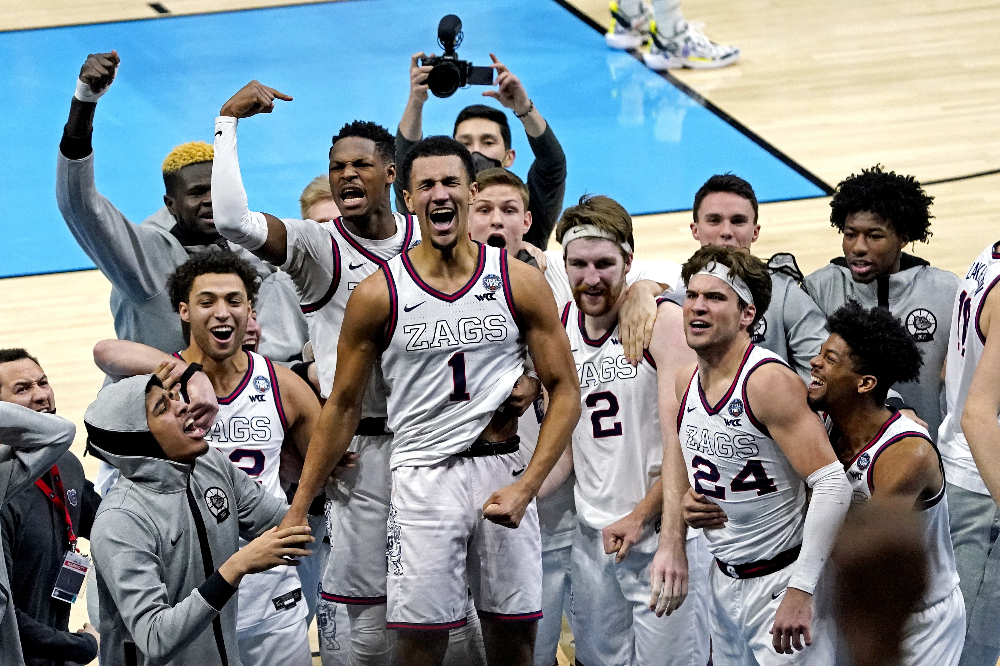

August 2021
In this project in R, I used Google Trends data on terms related to Gonzaga Basketball and a Kaggle dataset on the NCAA Tournament
to analyze how the team's seed in the tournament affected search popularity

Using SQL Server to clean data on housing in Nashville.

Exploration of Covid-19 dataset using SQL Server.

Dashboards in Tableau, including visualizations on Covid-19 and AirBnb locations in Seattle.
Data exploration and analysis on rating of TV shows on streaming services using Python.

Exploring correlation in variables about movie releases using Python.